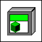

This control/indicator has a problem with its default value. The default value includes data from a LabVIEW class that is missing or has errors. In the following example, the first class control has no problems with the default value. In the second class control, LabVIEW dimmed the icon indicating there is a problem with the default value of the control.
Control with no problems with the default data:
Control with problems with the default data:
To fix this issue, you must complete one of the following: